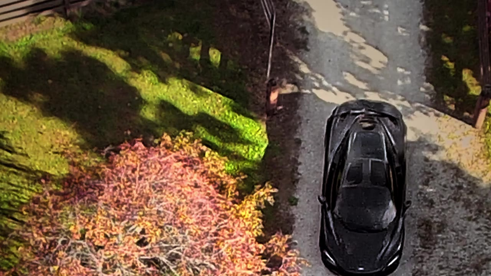
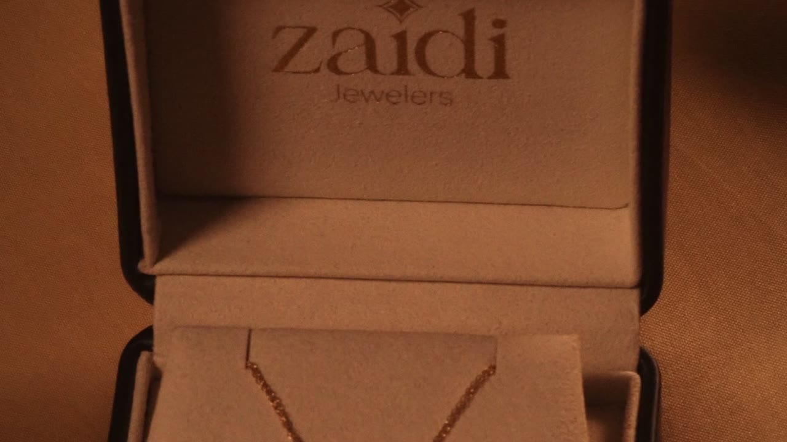
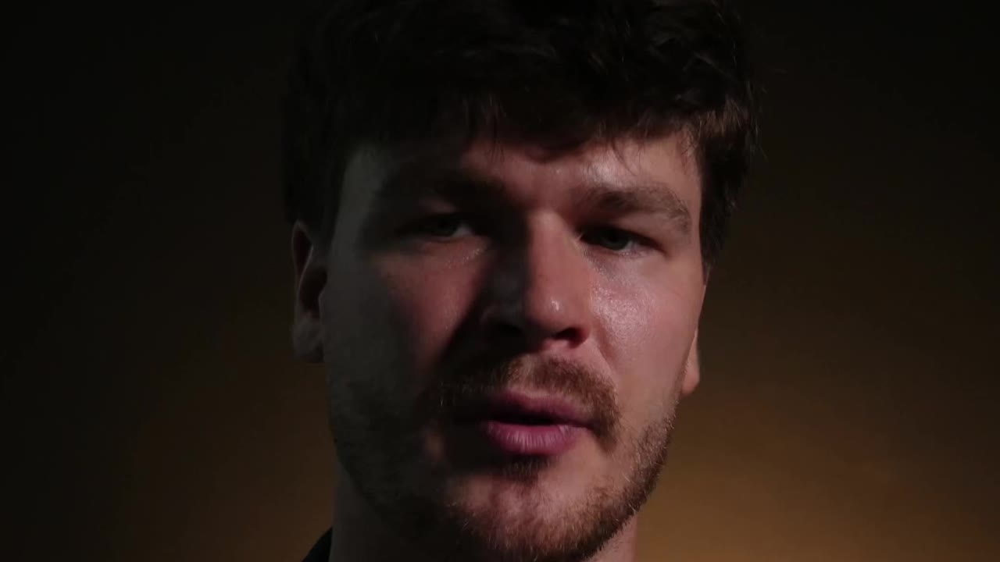
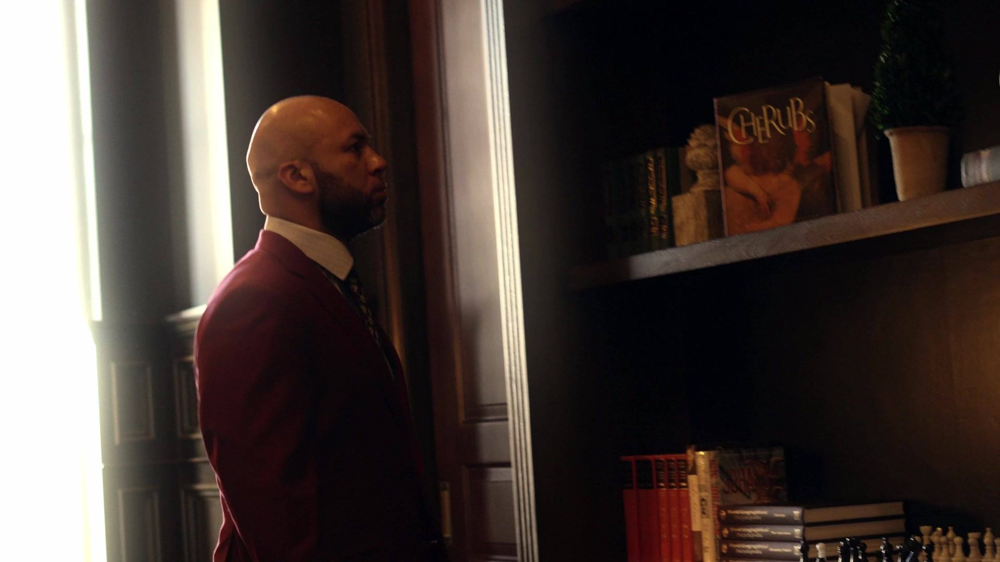
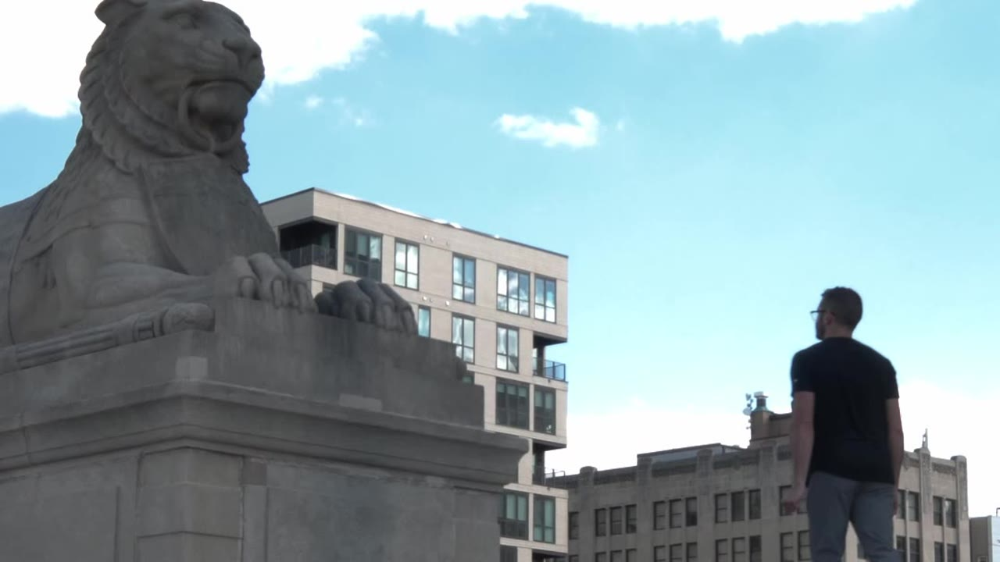
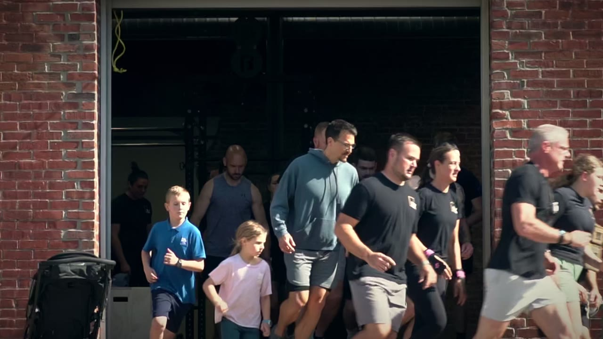

Switch to Daniel Klabunde →
Switch to Daniel Klabunde →
Commercial & Brand
Ether Exotics
Two vertical videos for Ether Exotics, a luxury dog-breeding ranch in northern Indiana. Shot in a day, with about two days to prepare.
Read the story →Commercial, brand and social video production for businesses.
Watch the showreelsPlaceholder: short company intro. What Klabunde Media Co. makes, who it's for (described generally, no client names), and how the work runs, including ongoing client relationships.
I write a detailed shot list and script for every project, personal and client. More on how I write a shot list →
Each page covers the work for that client, including ongoing relationships, with notes on the constraints and the decisions behind the cuts.
About the company →
Two vertical videos for Ether Exotics, a luxury dog-breeding ranch in northern Indiana. Shot in a day, with about two days to prepare.
Read the story →
A selection of ongoing work for Zaidi Jewelers, a regular client and a premium jewelry brand in Indianapolis.
Read the story →
Vertical videos for Jacob Deacon, the number one realtor in Indiana, and LIV Realty, his brokerage.
Read the story →
A selection of ongoing work for Carmel Tailoring, a consistent client and a men's clothier and tailor in Indianapolis, owned by Moon.
Read the story →
A vertical brand film for Nootrimind, a mental wellness supplement brand based in Indianapolis.
Read the story →
An event recap of the CrossFit Murph at The RX Building, a community health center and CrossFit gym.
Read the story →I write a hyper-detailed shot list and a script in Notion for every project, including the commercial work on this side of the site. For a product film that means describing the shot composition, the lens, the move, and the light before I shoot, in language precise enough to work from and to judge the footage by.
The mockup here is an example shot list for a generic luxury-brand product film — cloth, a fitting, a piece of jewelry — not a client from this site.
I also publish long-form videos that break down cinematography, sometimes shot by shot: a visual evaluation of composition, lighting, and movement, describing the footage precisely. See the cinematography breakdowns →
| Shot # | Scene / set | Description | Shot size | Camera movement | Lens |
|---|---|---|---|---|---|
| 01 | Atelier table, cloth roll | A roll of dark wool unrolls toward camera. A hand enters from the right to stop it. | WS | Slow dolly in as the cloth settles | 35mm |
| 02 | The same table | Macro of the weave, then a chalk line. Hold until the chalk lifts. | ECU | Static, then a short rack from the weave to the chalk tip | 100mm macro |
| 03 | Fitting area | A jacket is settled onto the shoulders. Hands smooth the lapel and rest. | MS | Gentle gimbal arc left to right, stop on the lapel | 50mm |
| 04 | Jewelry table, black cloth | A ring is placed into the frame. The fingers leave. Hold on the stone. | CU | Push-in, ending tight on the stone | 90mm macro |
Example shot list
A roll of dark wool unrolls toward camera. A hand enters from the right to stop it.
Slight high angle, table edge parallel to the bottom of the frame. Soft north window; no hard edge on the wool; a warm practical deep in the background
Macro of the weave, then a chalk line. Hold until the chalk lifts.
Top-down, chalk line on a diagonal. Same window; flag the practical so the texture holds
A jacket is settled onto the shoulders. Hands smooth the lapel and rest.
Three-quarter back, over the fitter's shoulder. Window key, warm practicals; no shiny hotspot on the wool
A ring is placed into the frame. The fingers leave. Hold on the stone.
Low, across the cloth, ring slightly left of center. Large soft key, a hard kicker for the facet, black flags around the table
Example shot list — storyboard